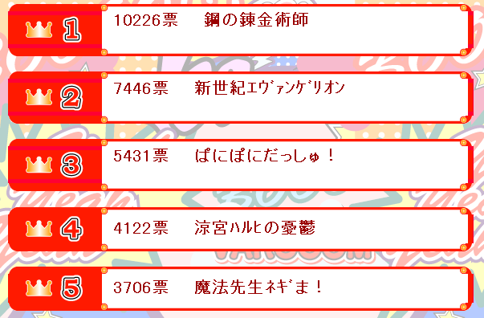

EdwardElric.com has closed
As of 2011, EdwardElric.com has closed. The site will remain available but not updated with new content. Thanks to all the Fullmetal Alchemist fans who visited the site over 2.5 million times since 2004!
If you've stumbled on this site recently, the best content is the trivia page and the wallpapers collection (over 50 wallpapers).
You might also find the episode guide useful, particularly episode 3 for the discovery that the animation studio copied the text of one of the books from a Dungeons & Dragons sourcebook review. The episode guide also includes screenshots and counts the number of times Ed looks shocked or flips out because someone calls him "short".
New Fullmetal Alchemist Anime in April 2009
It's official. Studio BONES is working on the new Fullmetal Alchemist anime. It's believed that the new anime will fit closer to the original manga, which is still one of the most popular manga series in Japan.
Anime News Network has more information. I'll keep you posted..
REVIEW: Fullmetal Alchemist, full series
Posted on 1st October 2007
Initially based off the manga of the same name, the 51 thirty-minute episodes of the Fullmetal Alchemist anime series apparently deviates from its source material beginning in the mid-20s (episode count). Fullmetal Alchemist tells the story of the Elric brothers, who travel across a quasi-Germany that relies on a mixture of World War I-ish technology and advanced alchemy (you know, the precursor of modern chemistry). After they botched an attempt to transmute their dead mother back into their alive mother, Edward must pay a hefty price (geez, they charge him an arm and a leg, ha ha ha!) to seal his brother Alphonse's soul into a suit of armor (this isn't spoilery, it's the show's setup). They then spend much of the rest of the series trying to find the formula to create a Philosopher's Stone (no Harry Potter fans, not a sorcerer's stone) to break alchemy's reliance on equivalent exchange and restore Ed and Al's bodies. Click here to continue reading REVIEW: Fullmetal Alchemist, complete series »
FMA rated #1 in Japan
Posted 28th May 2007
Something called Monday Variety in Japan has taken a poll of the top the top 100 most popular anime aired in Japan between Oct 2005 and September 2006. Can you guess who's first?

For this of you who can't read kanji (and I know I can't): #1 is Hagane no Renkinjutsushi, or as we know it, Fullmetal Alchemist, with a whopping 10,226 votes! #2 is Gainax classic Neon Genesis Evangelion, #3 is school comedy Pani Poni Dash, #4 is The Melancholy of Suzumiya Haruhi, and #5 is Ken Akamatsu's Negima!. Nice one, FMA.
On Alchemy and Pastries
Posted 9th May 2007
Thought you guys might appreciate this comic.
New Wallpapers Every Week - Guaranteed!
Posted 10th December 2006


After much procrastination I've added new wallpapers to the site. Starting today, a new wallpaper will be added every week on Sunday. At the current rate, I don't expect to run out of wallpapers until some time in September at the earliest, so you can have yourself a new wallpaper every single week until winter 2007! Oh, and I finally fixed the link to the Roy Mustang wallpaper.
Check 'em out. Fullmetal Alchemist wallpapers!
Fullmetal Alchemist voted top 10 in Japan
Posted 8th October 2006
Anime News Network reports that in a survey of 80,000 Japanese fans, Fullmetal Alchemist made the top 10 list for both anime and manga!
FMA ranked as the 4th most popular manga and the 9th most popular anime. In manga, it was beaten only by basketball series Slam Dunk (which didn't do so well over here and the English language release was cancelled mid-series), JoJo's Bizarre Adventure (the manga we get that "WRYYYYYY" meme from) and the astoundingly popular Dragonball (which I'd be surprised if you hadn't heard of by now). It managed to defeat classics like the hugely popular Doraemon and Black Jack, as well as the recent (and utterly awesome) Death Note (which I recommend you pick up on your next visit to the manga store). I can also highly recommend Azuma Kiyohiko's Yotsuba&! (13th place) and Azumanga Daioh (16th place).
In anime, FMA was beaten by solid classics like Evangelion and Mobile Suit Gundam, as well as the massively popular Miyazaki movies like Nausicaä and Laputa. While FMA ranked below the more contemporary GITS: SAC and Mushishi, it still managed to knock out such established anime classics as the original Ghost in the Shell (10th place), the entire Dragonball series (11th place), Princess Mononoke (12th place) and Akira (13th place). Considering that this is a vote for the best anime ever - and there are anime here going back to the 70s - I'd say ninth place is a success!
Interestingly, the Fullmetal Alchemist movie made it to 16th place on the list, ranking higher than the excellent recent series Kamichu! (22nd place) and Cardcaptor Sakura (21st place), which was far more popular in Japan than our own horrendously edited and censored English Cardcaptors dub.
Oct. 3rd - Never Forget
Once again I seem to have neglected the website for too long! Never worry - here's some news for you. I've received word from a reader that the Fullmetal Alchemist movie will be released on October 3rd. FMA fans will recognise that as the date inside Ed's watch - the date that the brothers burned down their home so that they could never go back. I hear rumour of a theatrical release in the States, so fingers crossed.
The official website tells us that the movie, The Conqueror of Shamballa, is already available for pre-order. It's been out in Japan for quite a while, but the limited edition Japanese with English subtitles had been quite pricey. Now, we have the official English language release!
All the female officers will wear miniskirts!
I've found that an advantage to having friends in Japan is that you get to taunt people with screenshots of the OVAs...
{kind=link}
{kind=link}
This site got 2,468 hits yesterday. Keep up the good work!
April Fools!
Click here to see what the site looked like on April 1st 2006! 1,991 visitors were treated to the prank - thanks for linking to the site! We've already passed half a million visitors.
Something that's not an April joke is that I've just seen the Fullmetal Alchemist OVAs (Original Video Animation), a set of three all-new animated shorts that was just released in Japan. I'll see about writing up something about that.
Is Fullmetal Alchemist over?
Not by a long shot! Neither is this website. Bookmark this page and keep watch on it for further updates. We'll be putting up more information about the series, as well as information on the Fullmetal Alchemist movie set after the final episode. There's also something planned for April.
We're really sorry!
This website receives around four hundred visitors daily, despite having not been updated in a long, long time. I really have to apologise to you, my loyal readers, for allowing the website to go so long without new content.
Today, January 28th 2006, I have decided to reward your patience by resuming updates. I've added episode guides for two more episodes (12 and 13), updated the trivia on Ed's outfit from episode 44 onward, and added a new wallpaper to the site - in truth, the wallpaper's been there for a while now, but I had rigged the site only to show it once I had added episode 13's guide.
I'm doing what I can to get my hands on the ridiculously expensive Fullmetal Alchemist limited edition movie DVD, which just came out in Japan. I recommend you import it once you've watched the final Fullmetal Alchemist episode episode. Why's the limited edition version worth importing if it's so expensive and all in Japanese? It comes with English subtitles.
What is Fullmetal Alchemist?
If you've not yet heard of Fullmetal Alchemist, you're in for a treat. Fullmetal Alchemist (FMA for short) is a fantastic 51-episode animated series from Japan that follows the journey of Edward Elric, a boy with a an incredible talent for alchemy. Fans of the series in Japan are already calling it the best anime of 2004. The first episode was previewed at anime conventions and aired on Cartoon Network on November 6th, 2004.